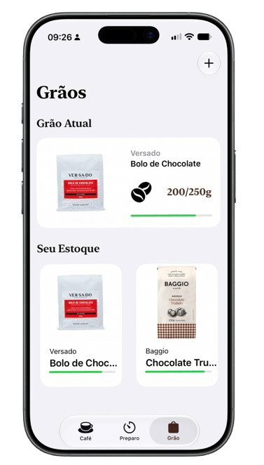

Seus grãos
Organize seus grãos.
Cadastre seus grãos, registre quanto você tem disponível e acompanhe o consumo conforme prepara seus cafés.
Para que serve?
Você sabe o que tem disponível e quanto
ainda pode usar antes de precisar repor.
